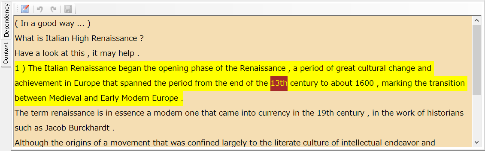
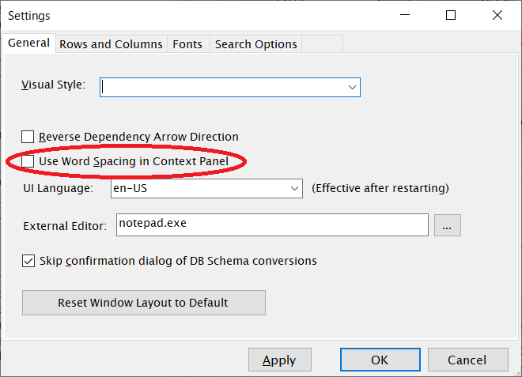
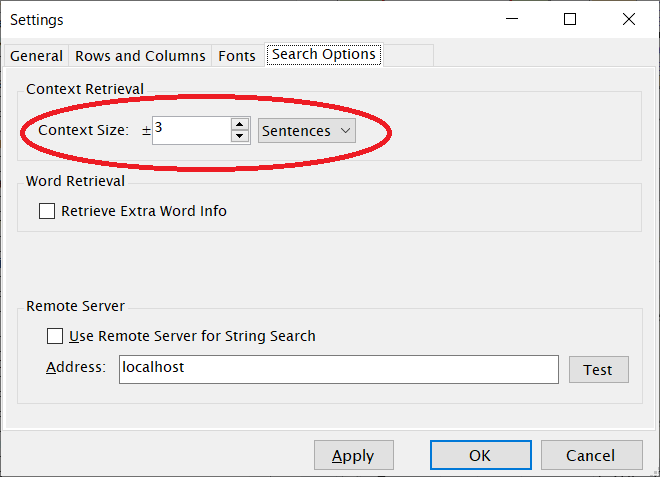

文脈を表示する
ChaKiには、任意の文がコーパス内でどのような文脈内に出現しているかを確認するための"Context"パネルがあります。Dependency表示エリア左端のタブで"Context"を選択し、Contextパネルに切り替えます。
Dependencyを表示する操作と共通になりますが、KWIC結果ビューに表示されている任意の文をダブルクリックすると、その文の前後文脈がContextパネルに表示されます。

ダブルクリックした文については背景が黄色で表示されます。また、その行のKWIC Center語が存在する場合、Center語は背景が赤で表示されます。
ワード区切が必要な言語においては、設定画面（メニューの"Option"-"Settings"により表示される）の"General"タブで "Use Word Spacing in Context Panel"にチェックを入れてください。チェックされているとワード間にスペース文字が挿入された形で表示されます。

前後の文をいくつまで表示するかについては、設定画面の"Search Options"タブで Context Size欄の値を編集することにより変更できます。
